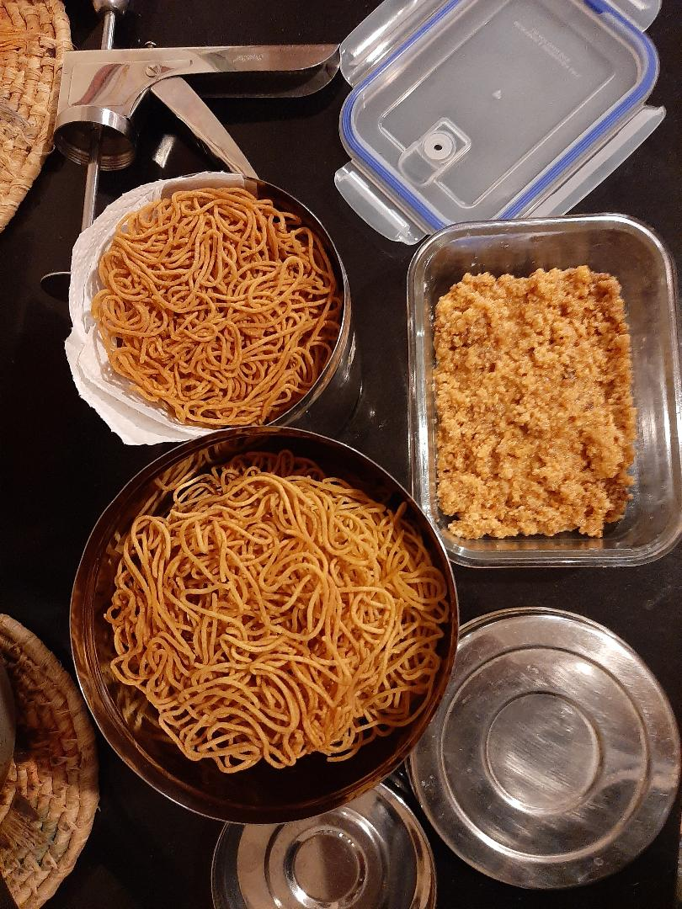

Ingredients
- Chickpea Flour 1 cup
- Rice flour 1 cup
- 2 Tbsp melted butter
- 1/2 tsp of Chilli powder
- 1 tsp of Ajwain
- Enough water
- Needed salt
- Oil for frying
Steps
- Fry the Ajwain on a low flame
- Powder the Ajwain after it cools down
- Sieve the rice flour and Chickpeas flour
- Add Required Salt
- Add chilli powder
- Add the melted butter
- Mix the powdered ajwain with water
Add the filtered water to the flour mix
Mix it well to form a dough not very loose
- Heat the oil for frying
- Take the Omapodi press. Grease it well
- Make small dough balls and put it Omapodi press
- Make small circles in the hot oil
- When the color changes turn it
- Cook the other side. Omapodi is ready.
You can make 10 for this measurement